Gulf винаги е имал слабост към моторните спортове — от рекордите по скорост в солените равнини на Бонвил през 30-те години до завръщането във Формула 1. Почти век състезателна история, изписана в светлосиньо и оранжево.
Близо век състезателна история — от рекордите в солените равнини на Бонвил до завръщането във Формула 1.
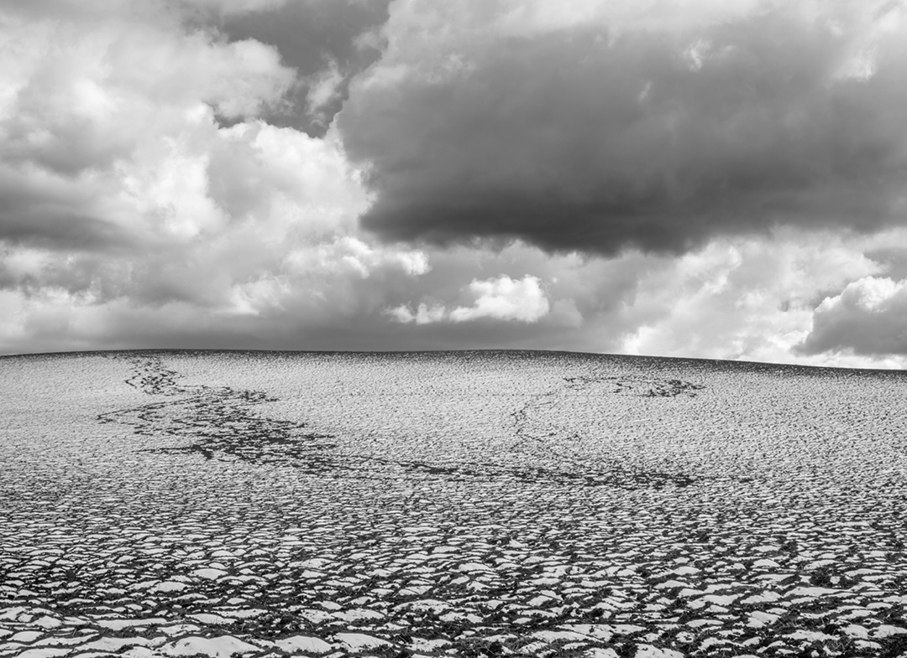
Рекордният автомобил Mormon Meteor, движен от дванадесетцилиндров двигател Curtis и подкрепен от Gulf, поставя началото на дългата връзка между марката и стремежа към скорост. В солените равнини на Бонвил той изминава денонощие с непрекъсната средна скорост от 153,8 мили в час — постижение, което по онова време изглежда на ръба на възможното за серийно достъпна техника.
Изпитанието е сурово не само за пилота, а преди всичко за маслото. Двадесет и четири часа непрекъснато натоварване при високи обороти и температури са най-прякото доказателство за качеството на смазочния материал, а Gulf излиза от теста с репутация, изградена върху резултат, а не върху реклама.
Обновената версия от 1937 г. вдига летвата още по-високо и достига 157,3 мили в час. Този втори рекорд затвърждава мястото на марката сред имената, на които се доверяват хората, тръгнали да преследват границите на възможното.
Само две години след Бонвил идва нова серия постижения. С автомобила Gulf-Miller пилотът Джордж Барингър подобрява четиринадесет отделни скоростни рекорда — резултат, който превръща еднократния успех в последователна програма за развитие.
Сред тях се откроява средната скорост от 142,770 мили в час, задържана на дистанция от цели 500 мили. Подобно натоварване изисква не просто мощност, а способност на двигателя да работи стабилно часове наред без загуба на налягане и без прегряване.
Тези рекорди оформят подхода, който Gulf ще следва през следващите десетилетия: състезанието не е витрина, а изпитателна лаборатория, чиито изводи се връщат директно в разработката на продуктите за пътя.
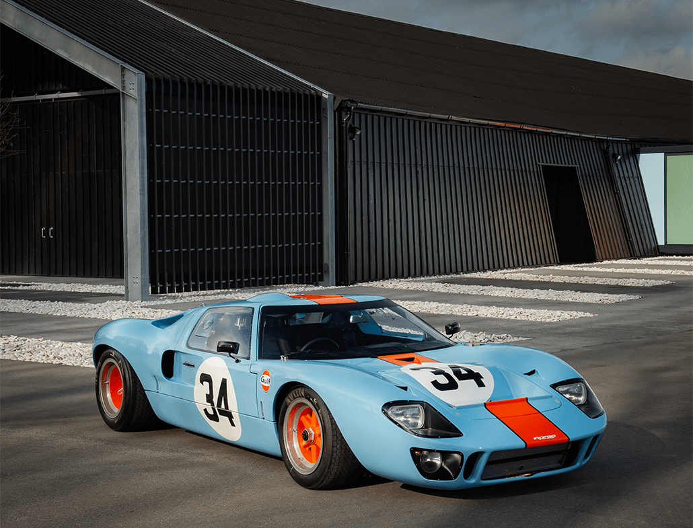
Съвместната работа с Джон Уайър и неговата компания JW Automotive Engineering е моментът, в който Gulf престава да бъде просто спонсор и се превръща в част от самата легенда. Отборът се състезава с Ford GT40, Porsche 917 и собствените болиди Mirage — три машини, всяка от които оставя следа в историята на състезанията за издръжливост.
Резултатът са три победи в двадесет и четирите часа на Льо Ман — през 1968, 1969 и 1975 година. Малко отбори в историята на състезанието успяват да спечелят с толкова различни поколения техника, а постижението остава връх в състезателната биография на марката.
Именно в тези години се раждат светлосиньото и оранжевото. Ливреята е замислена с напълно практична цел — автомобилът да бъде разпознаваем от трибуните дори при най-високи скорости и при лоша видимост. Решението се оказва толкова сполучливо, че цветовата схема надживява отбора и се превръща в най-подражаваната в автомобилния спорт.
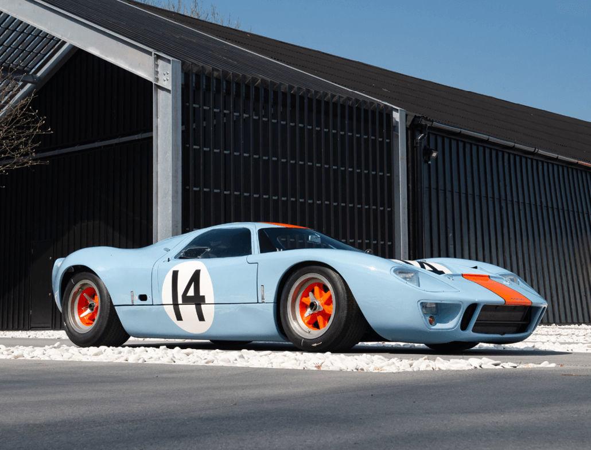
Успехът идва бързо. Mirage-Ford M1 печели хилядата километра на Спа в Белгия — първата състезателна победа за новосъздадения отбор и потвърждение, че проектът има реален потенциал, а не само амбиция.
Пистата в Спа е сред най-взискателните в Европа, с дълги прави отсечки и бързи завои, които натоварват двигателя до краен предел. Победа именно тук носи тежест, каквато успех на по-лека писта не би имал.
През същия сезон следват още успехи в поредица европейски състезания. Отборът навлиза в следващата година като сериозен претендент, а не като аутсайдер — позиция, която ще се окаже решаваща за случилото се в Льо Ман.
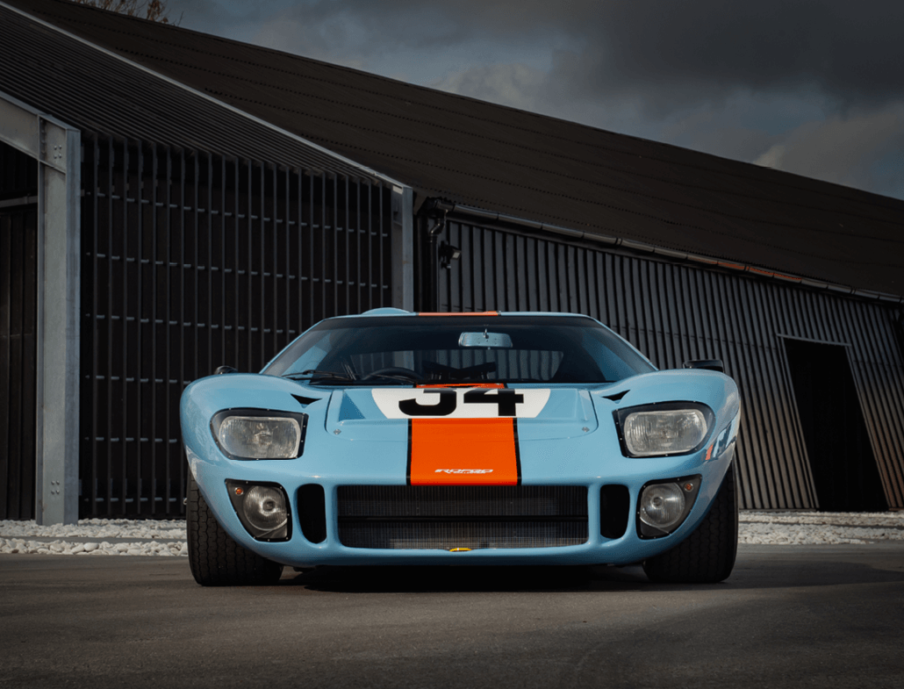
На двадесет и девети септември 1968 година Ford GT40 с номер девет пресича финалната линия начело в двадесет и четирите часа на Льо Ман. Това е първата победа на Gulf в най-известното състезание за издръжливост в света и моментът, в който светлосиньо-оранжевата ливрея влиза в историята.
Победата в Льо Ман не се печели с върхова скорост, а с надеждност. Денонощие непрекъснато каране означава, че всеки компонент трябва да издържи стотици хиляди работни цикъла без отказ — а маслото остава единственото, което не може да бъде сменено при проблем.
Сезонът не се изчерпва с този успех. Отборът добавя още седем победи през същата година, което превръща 1968 г. в един от най-плодотворните сезони в цялата история на марката.
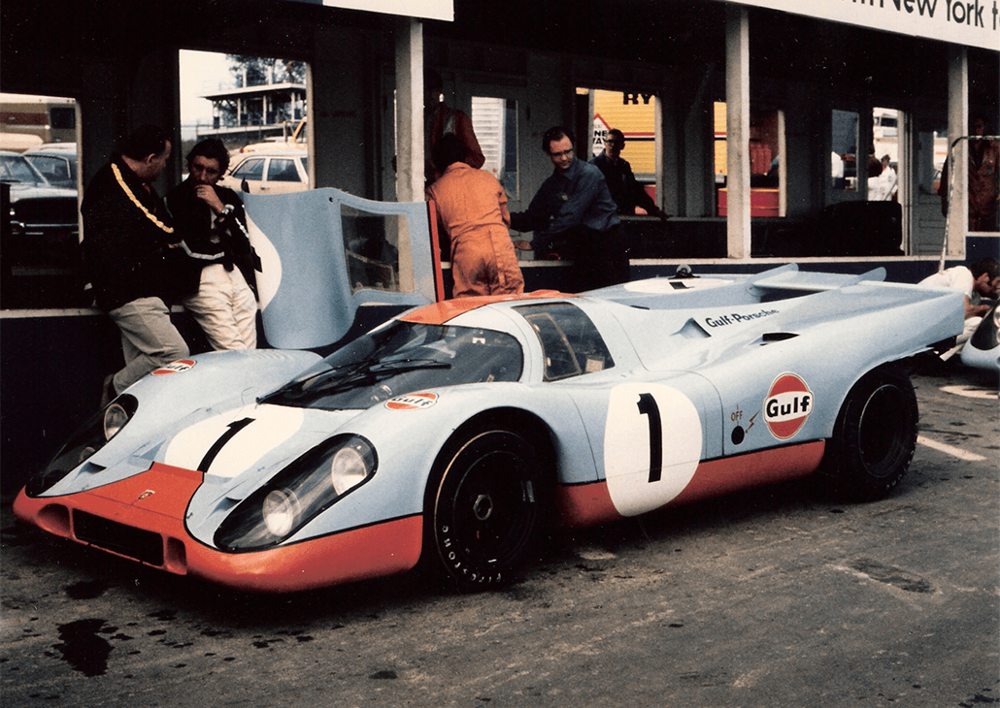
Година по-късно Джаки Оливър и Джаки Икс повтарят успеха със същото шаси — постижение, което говори повече за издръжливостта на техниката, отколкото всяка рекламна кампания. Средната им скорост за цялото денонощие е 129,4 мили в час.
За двадесет и четири часа екипажът покрива 3105,61 мили, или 4998 километра — разстояние, съпоставимо с пресичането на цял континент, изминато без нито едно спиране за сериозен ремонт.
Сестринският автомобил на отбора финишира трети, което затвърждава резултата като отборен, а не като щастливо стечение на обстоятелствата. Финалът от 1969 г. остава сред най-оспорваните в цялата история на състезанието, като разликата до втория е измервана в секунди след цяло денонощие каране.
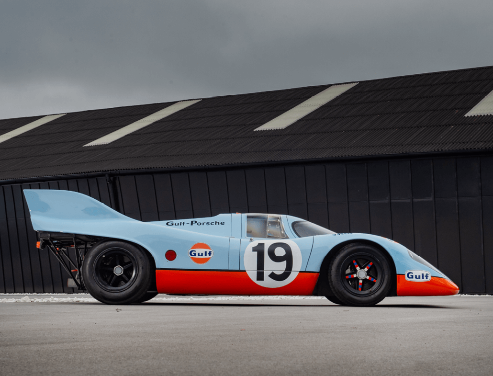
Новото десетилетие започва с дебютна победа в двадесет и четирите часа на Дейтона. Porsche 917 е най-мощната и най-трудна за управление машина, с която отборът се е захващал до момента, а укротяването ѝ изисква също толкова работа по настройките, колкото и по пилотирането.
Сезонът продължава с още седем победи — резултат, който на практика превръща състезателната година в демонстрация на превъзходство. Малко отбори в историята на шампионатите за издръжливост постигат подобна доминация в рамките на един сезон.
Към тях се добавя и триумфът на заводския Porsche 908/3 в Targa Florio — състезание по затворени планински пътища в Сицилия, което поставя съвсем различни изисквания към техниката от бързите писти и доказва универсалността на подхода.
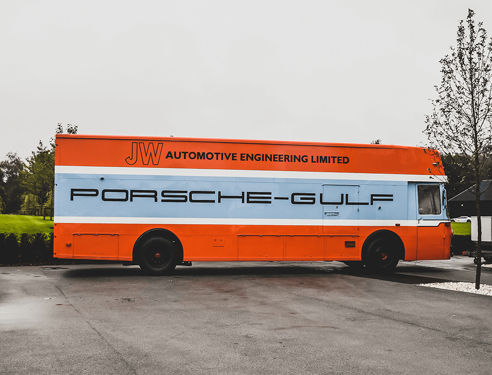
През 1971 година филмът „Льо Ман“ на Стив Маккуин изважда светлосиньо-оранжевата ливрея извън пределите на автомобилния спорт и я превръща в част от популярната култура. Porsche 917 с номер двадесет получава екранно присъствие, каквото малко състезателни автомобили някога са имали.
Маккуин, в ролята на пилота Майкъл Дилейни, носи огнеупорен гащеризон от Nomex с логото на Gulf. Кадърът се превръща в един от най-разпознаваемите образи в историята на моторните спортове и продължава да се препечатва по целия свят и до днес — повече от половин век по-късно.
В цветовете на марката се състезава и автомобил с номер двадесет и едно. Филмът затвърждава връзката между Gulf и представата за чист, безкомпромисен автомобилен спорт — асоциация, която по-късните партньорства само надграждат.
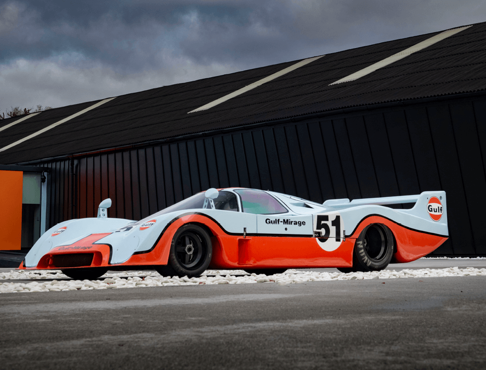
Създаването на собствена състезателна компания бележи нов етап — от подкрепа на чужди проекти към пълен контрол върху разработката. Резултатът е Gulf Mirage GR6 с двигател Ford Cosworth, машина, проектирана изцяло около изискванията на състезанията за издръжливост.
Дерек Бел и Гийс ван Ленеп водят състезателната програма през тези години. Комбинацията от опитен екипаж и собствена инженерна база позволява бърза обратна връзка между пистата и работилницата — предимство, което малко отбори по онова време могат да си позволят.
През 1975 година Бел и Джаки Икс носят трета победа в Льо Ман, а автомобилът GR8 финишира втори в същото състезание. Двойното класиране в челото затваря десетилетието по възможно най-убедителния начин.
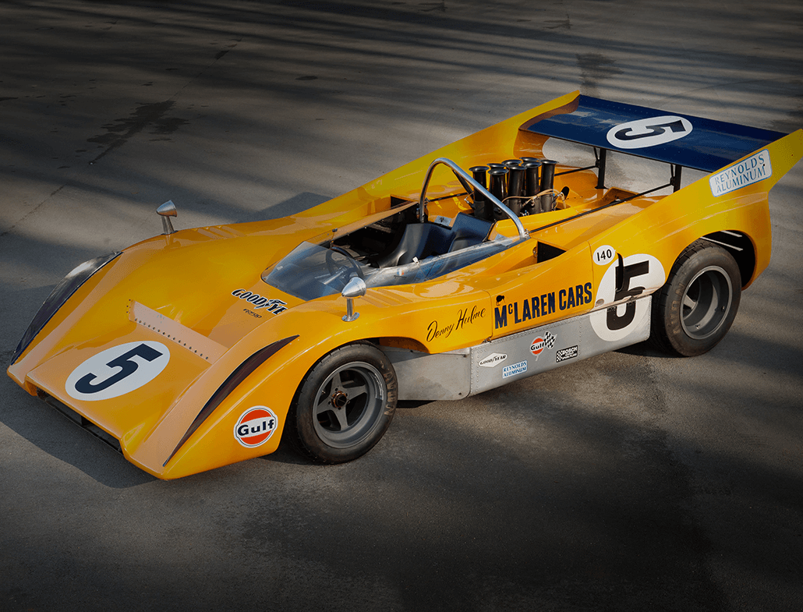
Съвместната работа с McLaren пренася марката във Формула 1 и носи седем победи в най-високото ниво на автомобилния спорт. През 1969 година Gulf подкрепя и отбора на Brabham, разширявайки присъствието си в шампионата.
Истинското господство обаче идва в северноамериканската серия Can-Am — категория без почти никакви ограничения върху мощността, където инженерната свобода е пълна. Отборът записва тридесет и пет победи, от които двадесет с двоен подиум на първо и второ място.
Подобно съотношение между участия и успехи остава практически непостижимо в съвременния автомобилен спорт. Тази епоха поставя основите на връзка с McLaren, която ще бъде възродена половин век по-късно при съвсем различни обстоятелства.
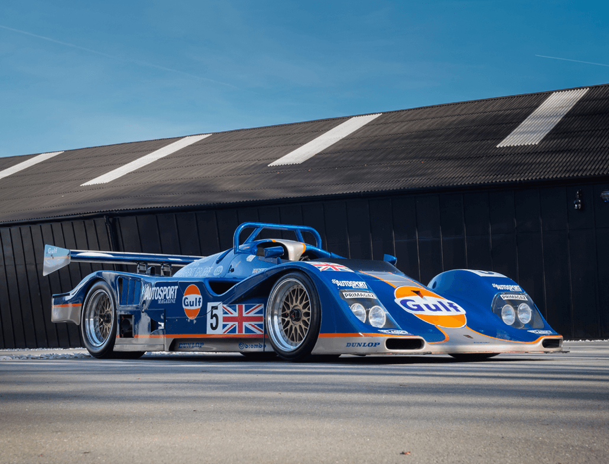
През 1994 година Gulf подкрепя опита на Дерек Бел за нов рекорд в Льо Ман — състезател, чието име вече е неразделно свързано с историята на марката от годините на Gulf Research Racing.
Автомобилът Porsche Spyder K8, подготвен от германския отбор Kremer, се завръща на пистата в Сарт в познатите цветове. За публиката, помнеща седемдесетте години, появата им е повече от състезателно участие — тя е пряка връзка с една отминала епоха.
Екипажът финишира шести в общото класиране. Резултатът не носи трофей, но потвърждава, че връзката между марката и състезанията за издръжливост не е прекъсвала дори през годините, в които тя остава по-встрани от прожекторите.
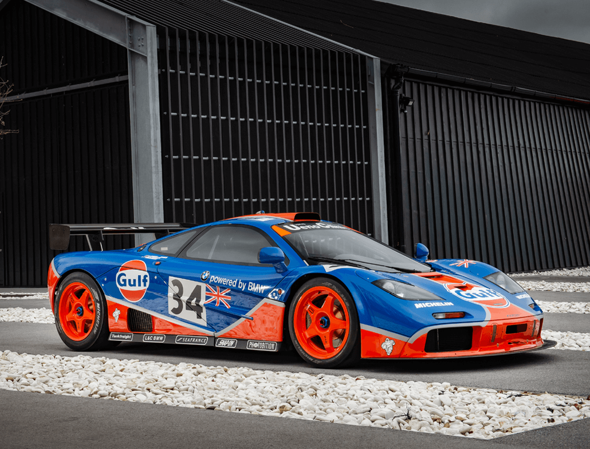
Подновеното партньорство с McLaren връща марката в челото на състезанията за спортни автомобили. Дебютът идва в четирите часа на Херес през 1995 година, а до края на периода отборът записва девет победи.
През 1996 година Рей Белм и Джеймс Уийвър печелят титлата в световния шампионат Global GT Championship. Успехът идва в момент, когато McLaren F1 GTR се е превърнал в еталон за категорията, а конкуренцията между заводските отбори е особено силна.
През този период автомобилите се редуват между обновените корпоративни цветове на марката и класическата състезателна ливрея от седемдесетте години. Съзнателното връщане към историческия дизайн показва колко силна е останала асоциацията между тези цветове и автомобилния спорт.
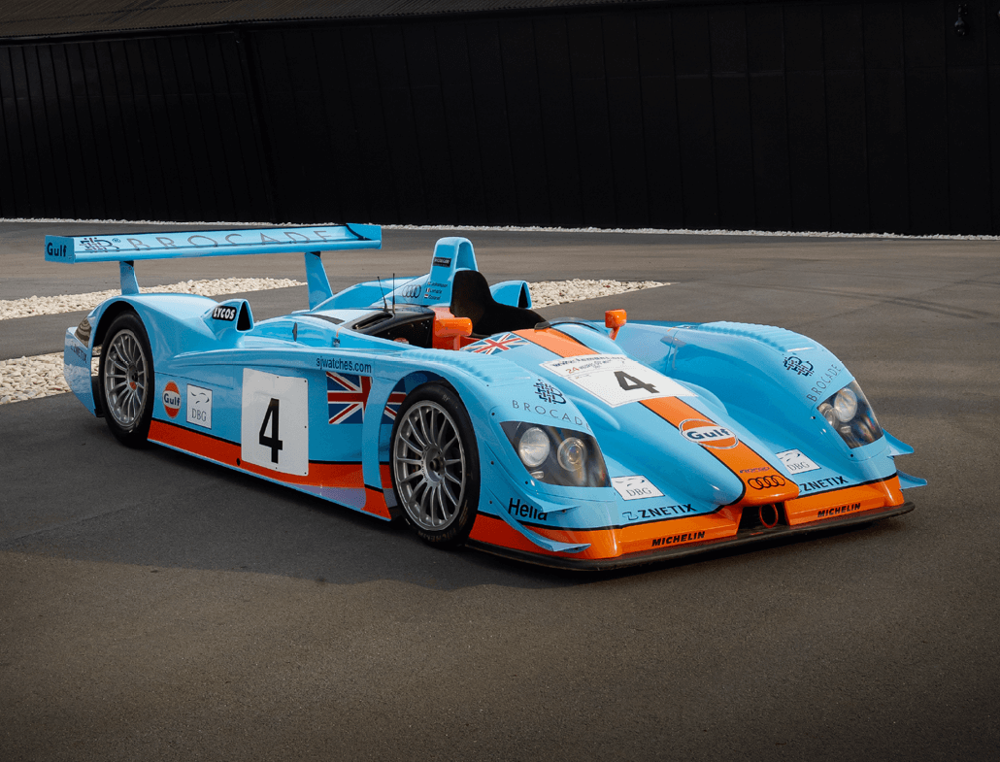
Новото хилядолетие започва с партньорство със Стефан Йохансон — бивш пилот от Формула 1, който по това време ръководи собствен състезателен отбор. Изборът на техника пада върху Audi R8, определяна за най-успешния прототип на своето поколение.
Сезонът в европейската серия Le Mans Series се оказва изключително силен. Отборът печели титлите както при пилотите, така и при отборите — двойно постижение, което малко състави успяват да съберат в рамките на една година.
Успехът потвърждава, че марката умее да разпознава подходящия момент и подходящия партньор. Вместо разпръсване между много програми, Gulf залага на един прецизно подбран проект и извлича от него максималния възможен резултат.
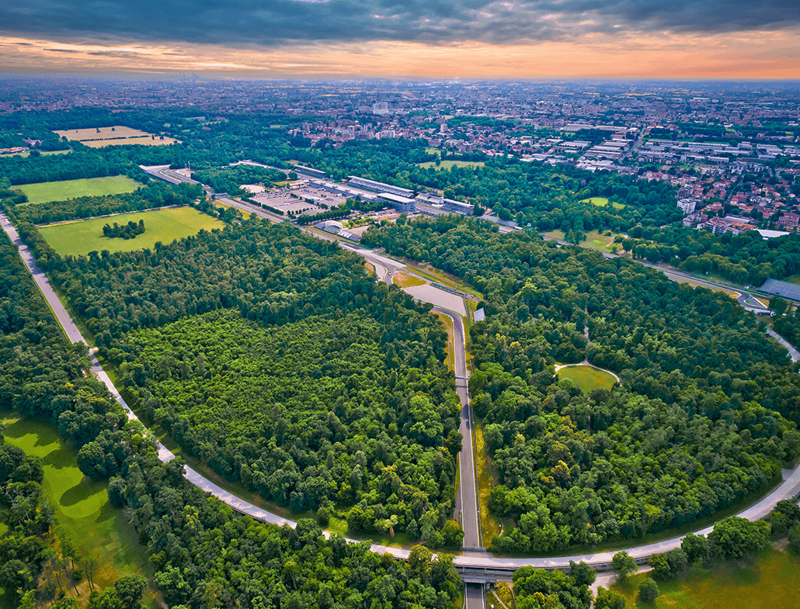
Отборът Paul Belmondo Racing се състезава с автомобили Courage в клас LMP2 и още в първия сезон записва победи на две от най-уважаваните европейски писти — Монца в Италия и Силвърстоун във Великобритания.
Към тях се добавят още три подиума през годината, включително второ и трето място в класа при участието в двадесет и четирите часа на Льо Ман. Двоен подиум в най-тежкото състезание за издръжливост е сериозно постижение за отбор от този мащаб.
Сезонът приключва с трето място в крайното класиране на клас LMP2. Резултатът връща марката сред редовните участници в челото на европейските състезания за издръжливост след няколко по-спокойни години.
През 2006 година марката излиза извън познатата територия на пистите и подкрепя заводския Nissan с задвижване на четирите колела на Пол Белмондо в рали Дакар — най-тежкото състезание за издръжливост в света.
Изискванията в Дакар нямат нищо общо с тези на пистовите състезания. Прах, пясък, резки температурни разлики и хиляди километри без сервизна база подлагат смазочните материали на натоварване, каквото не съществува никъде другаде в автомобилния спорт.
Автомобилът се бори за отличията при серийните превозни средства, преди да отпадне от състезанието. Участието остава ценно като изпитание при екстремни условия и като разширяване на присъствието на марката отвъд асфалта.
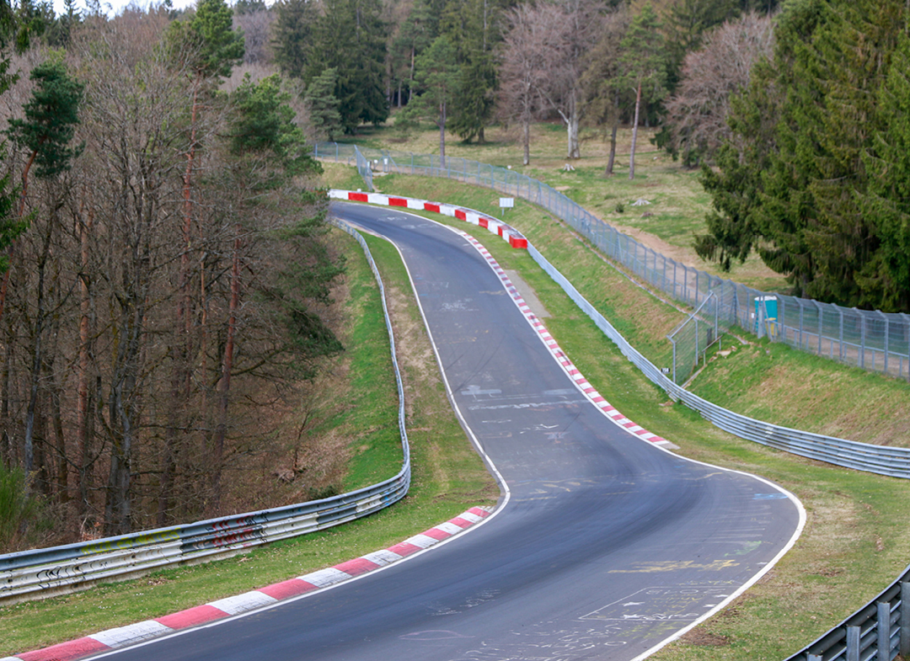
Съвместната работа с часовниковата марка TAG Heuer се основава на нещо повече от обща аудитория — двете компании споделят еднакво отношение към качеството и прецизното инженерство. Резултатът надживява самото партньорство.
Часовниците в цветовете на Gulf и до днес са сред най-търсените в цялата колекция на TAG Heuer. За колекционерите те са рядък пример за дизайн, чиято стойност се определя от историята зад него, а не от моментната мода.
Същата година марката подкрепя и автомобила Kytek 07S в клас LMP2 с отбора Barazi-Epsilon. Сезонът носи победи в Силвърстоун и Интерлагос, както и трето място в отборното класиране на класа.
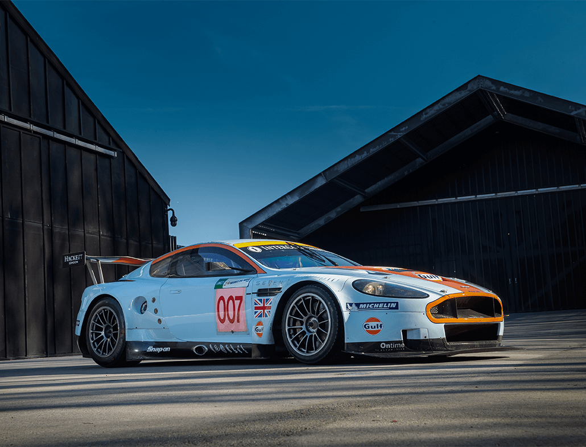
Партньорството с британската марка Aston Martin започва с незабавен резултат. Автомобилът Aston Martin DBR9 печели категория GT1 в двадесет и четирите часа на Льо Ман още в първата съвместна година.
Категория GT1 по това време е сред най-оспорваните в състезанието, с участието на утвърдени заводски отбори и техника, развивана през няколко сезона. Победа при дебют в подобна среда е рядкост.
Успехът поставя началото на най-дългия непрекъснат състезателен период в модерната история на марката — сътрудничество, което ще продължи почти десетилетие и ще обхване няколко различни шампионата и категории.
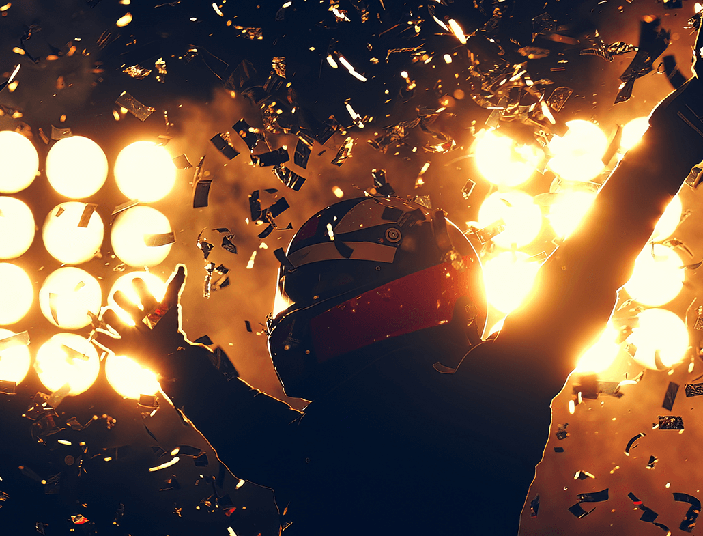
Втората година на партньорството носи преминаване към клас LMP1 — най-високата категория прототипи, в която се състезават заводските отбори с най-големи бюджети. Автомобилът DBR 1-2 записва две победи в серията Le Mans Series.
Сезонът преминава без нито едно излизане от подиума в шампионата, а на Нюрбургринг отборът постига пълно класиране на първите три места — резултат, който изисква едновременно скорост и безупречна надеждност от три отделни автомобила.
Годината завършва с три титли: при отборите, при производителите и при пилотите. Към тях се добавят и успехи в азиатската серия Le Mans Series, което разширява присъствието на марката извън Европа.
Сезон 2010 преминава под знака на постоянството. Отборът записва второ място в дванадесетте часа на Себринг — едно от най-тежките състезания в Северна Америка, известно с грапавата си настилка, която подлага окачването и двигателя на изключително натоварване.
Следва второ място и в осемте часа на Льо Кастеле във Франция, а сезонът в северноамериканската серия ALMS донася още едно второ място по улиците на Лонг Бийч.
Три поредни второ места на три напълно различни по характер трасета показват техника без слабо място. Отборът остава сред най-стабилните в шампионата, дори когато победата се изплъзва.
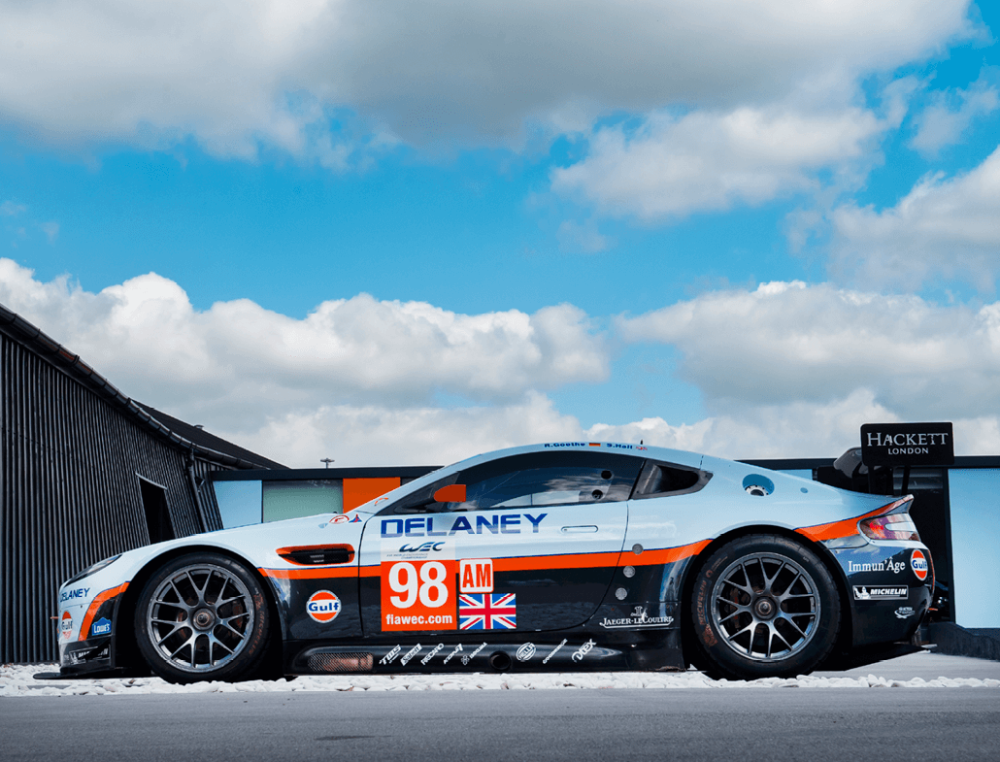
През 2011 година се създава Gulf AMR Middle East — съвместен проект с Майк Уейнрайт и Роалд Гьоте, който извежда марката на нов географски пазар, запазвайки връзката с Aston Martin.
Отборът се състезава с Aston Martin Vantage GT2 в Intercontinental Le Mans Cup — шампионат, обхващащ състезания на три континента и изискващ логистика, сравнима с тази на заводските програми.
Участието бележи и промяна в подхода: вместо еднократна подкрепа за отделни състезания, марката се насочва към дългосрочни програми с постоянен състав, което ще определи следващите пет години.
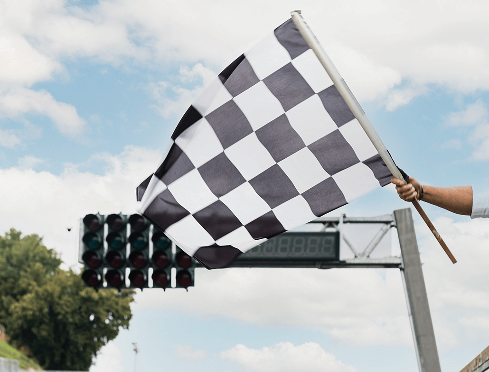
Пет последователни пълни сезона в Световния шампионат за издръжливост са най-дългият непрекъснат период на състезателно присъствие в модерната история на марката. Автомобилът Aston Martin Vantage GTE се състезава в категориите GTE Pro и GTE.
Началото е обещаващо — второ място в Себринг и трето място в двадесет и четирите часа на Льо Ман. Следва серия от шест поредни подиума, която завършва с победа в състезанието в Китай.
Успехите продължават без прекъсване до 2016 година. През този период Световният шампионат за издръжливост се превръща в основната състезателна сцена на марката и в най-прякото продължение на наследството от Льо Ман.
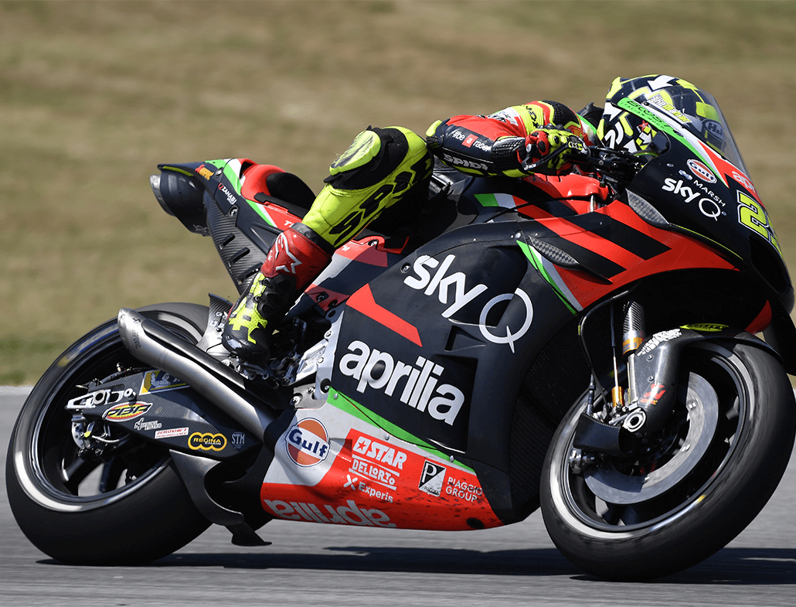
През 2017 година марката подписва споразумение с британския отбор Tockwith Motorsport за участие с прототипа Ligier LMP2 JS P217 — продължение на дългата линия от програми в състезанията за издръжливост.
Същата година идват и първите партньорства в мотоциклетните състезания. Gulf застава зад отборите Milwaukee Aprilia и Althea BMW в Световния шампионат Superbike — напълно нова територия за марката.
Навлизането в мотоциклетния спорт не е случайно. Изискванията към маслата при двуколесната техника са различни, а натрупаният опит се връща директно в разработката на продуктовата гама за мотоциклети.
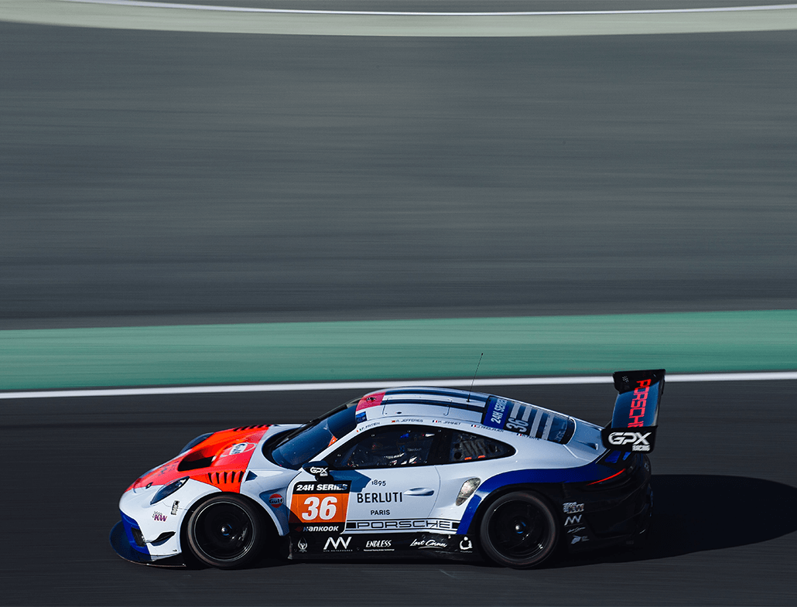
Съвместната работа с Ford Motor Company довежда до Ford GT в специална серия „68 Heritage“ — пряк поклон пред победите в Льо Ман от 1968 и 1969 година, пресъздаващ ливреята върху съвременен серийен автомобил.
През същата година партньорството с колекцията ROFGO носи победа в двадесет и четирите часа на Спа с Porsche 911 GT3R. Победа именно на пистата, дала първия успех на отбора през 1967 година, затваря кръга по забележителен начин.
Успоредно с това Porsche 911 RSR се състезава в категория GTE на Световния шампионат за издръжливост, което запазва присъствието на марката в основния шампионат за издръжливост.
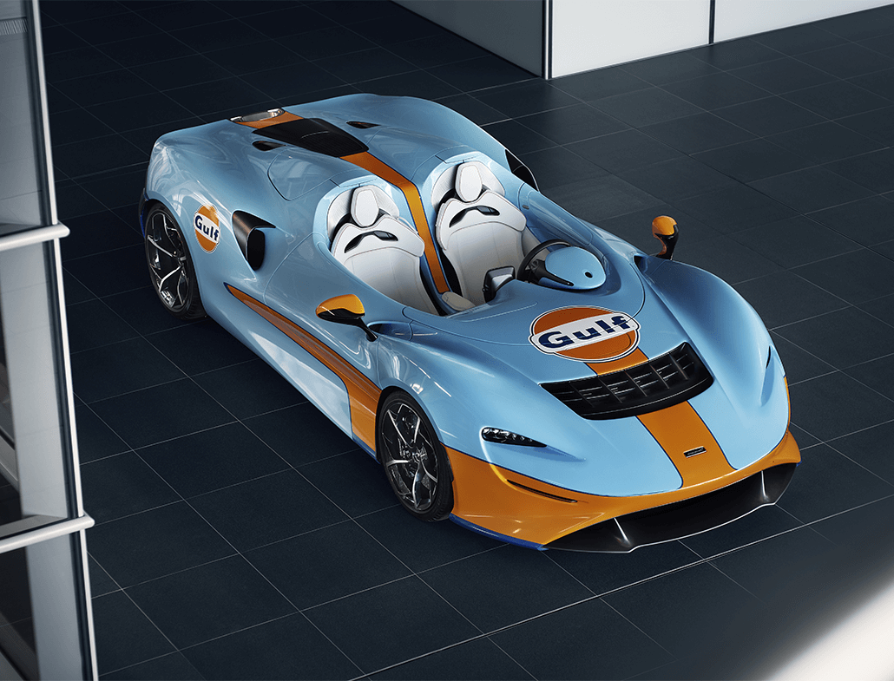
През 2020 година Gulf възобновява историческата си връзка с McLaren Racing — половин век след съвместните години във Формула 1 и в серията Can-Am. Малко партньорства в автомобилния спорт се завръщат след толкова дълго прекъсване.
Ретро ливреята, представена от отбора, е поклон пред дизайн, който не се нуждае от осъвременяване. Реакцията на публиката потвърждава, че светлосиньото и оранжевото са запазили силата си и пред поколение, което не е гледало състезанията от седемдесетте.
Партньорството излиза извън пистата — марката става официално препоръчано моторно масло за серийните автомобили на McLaren Automotive. Връзката между състезателната програма и продуктите за пътя става напълно пряка.
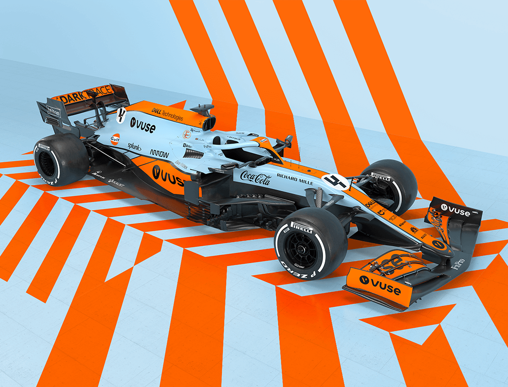
Кулминацията идва на Голямата награда на Монако през 2021 година. Специалната ливрея бележи завръщането на марката в спорта с една от най-емблематичните, разпознаваеми и уважавани цветови схеми в историята на Формула 1.
Дизайнът е нанесен върху двата болида MCL35M, върху екипировката на пилотите и върху цялата визия на отбора през уикенда. Изборът на Монако не е случаен — тясната улична писта е трасето с най-силна историческа тежест в целия календар.
Ландо Норис и Даниел Рикардо добавят подиуми през сезона. Осемдесет и пет години след рекордите в солените равнини на Бонвил марката остава там, където е започнало всичко — в самото сърце на автомобилния спорт.